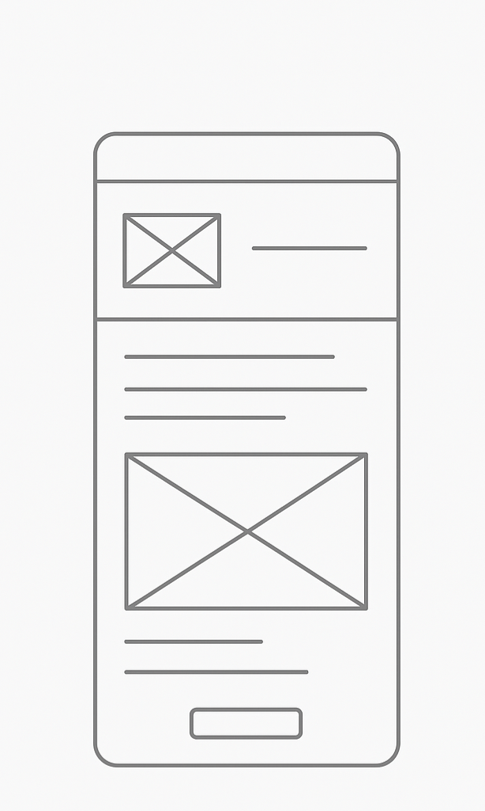
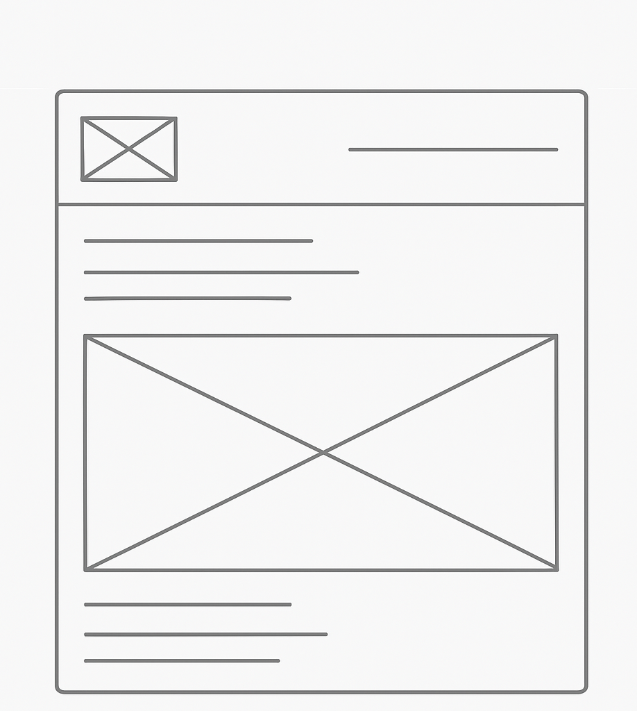

Site Name
Dynasty Warriors Fan Hub – This name represents a community site focused on the long-running Dynasty Warriors video game series. I chose it because it’s simple, recognizable, and clearly shows that the site is for fans of the series.
Optional domain availability: dynastywarriorshub.com
Site Purpose
The site provides an introduction to the Dynasty Warriors series, showcases major characters and their signature weapons, and explains the gameplay style. It will also include an interactive JavaScript feature such as a random character generator to make the site more engaging for fans and newcomers alike.
Scenarios
- Which Dynasty Warriors character is the best choice for beginners?
- Where can I find details about the different weapon types in the series?
- What makes the gameplay different from other hack-and-slash games?
Color Schema
The site will use a bold and energetic color scheme to reflect the action-oriented theme of Dynasty Warriors:
- Primary Color – Deep Red (#8B0000): Used for headers, navigation, and important highlights.
- Secondary Color – Gold (#FFD700): Used for accents, buttons, and highlights to complement the red.
Typography
The site will use clean and readable typography with a slight touch of style:
- Heading Font: "Cinzel", serif – used for titles and section headers to give a bold, historical look.
- Body Font: "Roboto", sans-serif – used for paragraphs and general content for readability.
Wireframe
Below are the wireframes for the planned home page layout:
Mobile View:
Desktop View:
